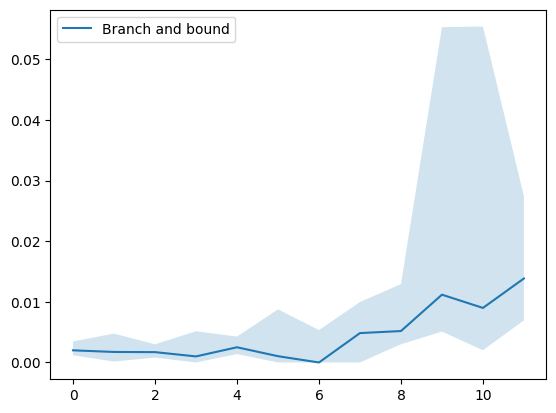
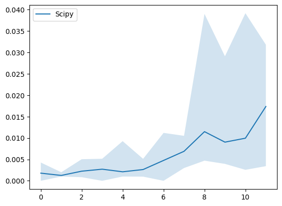
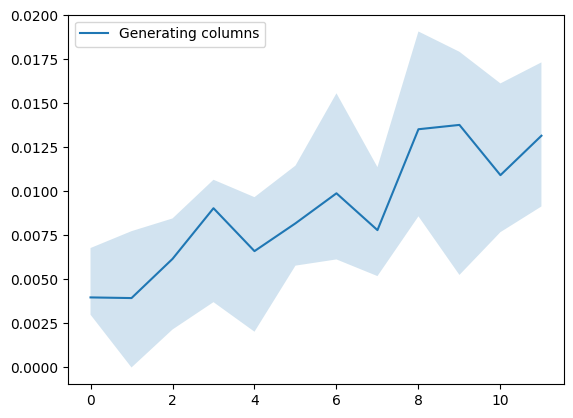
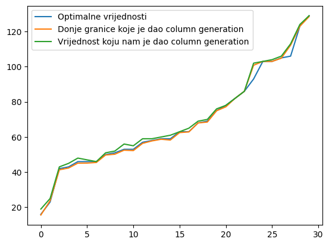

Posted on: March 15th, 2025
Many optimization problems can be reduced to integer programming (IP) or mixed-integer programming (MIP) problems. One such problem is the Cutting Stock Problem (CSP), and in this post we focus on its 1D variant. These problems are often NP-hard (for example, the CSP is NP-hard as noted in [Wolsey, 2020]). We will compare the performance of different algorithms for solving the CSP, paying special attention to the column generation approach.
Imagine a paper factory that receives large sheets of paper with dimensions 1 × L (where L is a positive real number). These large sheets can only be cut along their width (each resulting piece retaining a width of 1). Therefore, for a paper piece of dimensions 1 × a, the parameter a represents its length. Assume that there is demand for paper pieces of various lengths ai (for i = 1, …, n) with corresponding demand quantities di. The objective is to minimize the number of large sheets of size L required to meet this demand.
A straightforward formulation of the CSP as an integer programming problem is:
Minimize: z = ∑ₖ₌₁ᴷ yₖ
Subject to:
∑ₖ₌₁ᴷ xᵢₖ ≥ dᵢ for i = 1, …, n
∑ᵢ₌₁ⁿ aᵢ xᵢₖ ≤ L · yₖ for k = 1, …, K
yₖ ∈ {0, 1} for k = 1, …, K
xᵢₖ ∈ ℤ₊ for all i = 1, …, n and k = 1, …, K
Here, yₖ = 1 indicates that the k-th large sheet is used, and xᵢₖ represents the number of pieces of length ai obtained from it. K is an upper bound on the number of sheets required. Note that this initial IP model can be quite inefficient due to the potentially large number of inequalities and variables.
A better formulation considers cutting patterns. A cutting pattern is a vector (of the same length as a) where the i-th entry tells how many pieces of size ai are produced. The pattern is valid if all entries are non-negative integers and satisfy a · k ≤ L. Let A be the matrix whose columns contain all possible maximal cutting patterns (a pattern is maximal if no additional piece can be added). Suppose there are m maximal patterns and let c be a vector of ones with length m. Then, the CSP can be formulated as:
Minimize: z = c · x
Subject to: A x ≥ d
x ∈ ℤ₊ᵐ
Branch and Bound is a standard approach for solving integer programs and can be seen as a brute-force method. Below is an implementation tailored for the CSP (with some helper functions assumed to be defined elsewhere):
import numpy as np
from scipy.optimize import linprog
import math
def branch_and_bound(c, A, b, tx, tfun):
# Returns the best solution (lp.x) and its objective value (lp.fun)
# Initialization: tx = [[0]], tfun = [float('inf')]
"""
Expects an LP with a feasible solution.
Similar to scipy.optimize.linprog, it minimizes the objective.
tx is a list with one element (a numpy ndarray) and is shared.
tfun is the current best objective value.
Linear relaxations are solved using scipy.optimize.linprog.
"""
res = linprog(c, A, b, method='highs')
if not res.success:
return tx[0], tfun[0]
# Prune branch if the relaxed objective is worse than the best known.
if res.fun > tfun[0]:
return tx[0], tfun[0]
# If the solution is integer, update the best solution.
if is_integer_array(res.x):
if res.fun < tfun[0]:
tfun[0] = res.fun
tx[0] = res.x
return tx[0], tfun[0]
# Branch on the first non-integer variable.
i = first_non_integer_index(res.x)
# Branch with constraint x[i] ≥ ceil(res.x[i])
new_row_ge = np.zeros(len(c))
new_row_ge[i] = -1
A_ge = np.append(A, [new_row_ge], axis=0)
b_ge = np.append(b, -math.ceil(res.x[i]))
branch_and_bound(c, A_ge, b_ge, tx, tfun)
# Branch with constraint x[i] ≤ floor(res.x[i])
new_row_le = np.zeros(len(c))
new_row_le[i] = 1
A_le = np.append(A, [new_row_le], axis=0)
b_le = np.append(b, math.floor(res.x[i]))
branch_and_bound(c, A_le, b_le, tx, tfun)
return tx[0], tfun[0]
def csp_branch_and_bound(a, d, L):
"""
Main function that uses branch and bound to solve the Cutting Stock Problem.
"""
coeffs = cp_csp(a, d, L)
TX = [[0]]
TFUN = [float('inf')]
solution = branch_and_bound(coeffs[0], -coeffs[1], -coeffs[2], TX, TFUN)
return solution[1]
def csp_scipy_integrality(a, d, L):
"""
Solves the Cutting Stock Problem using scipy.optimize.linprog with integrality constraints.
"""
coeffs = cp_csp(a, d, L)
res = linprog(coeffs[0], -coeffs[1], -coeffs[2], integrality=1)
return res.fun
Note: Functions such as is_integer_array, first_non_integer_index, and cp_csp are assumed to be defined elsewhere.
Column Generation was originally developed for the CSP and later applied to other problems. The idea is to start with a limited set of basic columns—each corresponding to a cutting pattern that uses the maximum number of pieces of one type—and then iteratively add a new column that improves the objective value. To decide which column to add, one solves a knapsack problem based on the dual values from the LP relaxation. Although this method provides a good approximation, it does not always guarantee the optimal integer solution. For an exact solution, one could apply branch-and-price methods.
import numpy as np
from scipy.optimize import linprog
from knapsack import knapsack
def csp_generating_columns(a, d, L):
"""
Solves the Cutting Stock Problem using the column generation method.
Begins with basic columns where each column uses the maximum
number of pieces of a particular length.
Iteratively adds columns based on solving a knapsack problem until no
column with a negative reduced cost is found.
"""
n = len(a)
# Initialize basic columns
columns = []
for i in range(n):
new_col = np.zeros(n)
new_col[i] = L // a[i]
if new_col[i] == 0:
print("No solution exists: a[i] > L!")
return
columns.append(new_col)
A = np.column_stack(columns)
# Objective coefficients
c = np.ones(n)
# Solve the initial LP relaxation
primal = linprog(c=c, A_ub=-A, b_ub=-d)
x = primal.x
fun_val = primal.fun
duals = primal.ineqlin.marginals
while True:
knapsack_res = knapsack(l=a, L=L, v=-duals)
reduced_cost = 1 - knapsack_res[0]
if reduced_cost >= 0:
break
A = np.column_stack((A, knapsack_res[1]))
c = np.append(c, 1)
primal = linprog(c=c, A_ub=-A, b_ub=-d)
x = primal.x
if x[-1] < 1e-8:
break # Avoid infinite loop if new column is not used
fun_val = primal.fun
duals = primal.ineqlin.marginals
A = A[:, x > 0] # Remove non-basic columns
x = x[x > 0]
c = np.ones(A.shape[1])
lower_bound = fun_val
x = np.ceil(x)
achieved_obj = np.sum(x)
return lower_bound, achieved_obj, x, A
The figures below illustrate the performance of the implemented algorithms on various inputs:

Figure 1: Performance of the branch and bound algorithm using generated inputs.

Figure 2: Performance of scipy.optimize.linprog with integrality=1.

Figure 3: Performance of the column generation algorithm.

Figure 4: Approximation quality of the column generation method compared to the optimal solution. Blue represents the optimal solution, orange represents the lower bound given by the column generation method, and green represents the solution given by the column generation method.
Although we have not delved deeply into the original IP formulation, it can be useful in certain scenarios (for instance, when large sheets vary in size). For small instances, branch and bound may be more effective. In contrast, column generation scales better for large problems since a one-unit difference in the solution is often less significant. It is important to note that the column generation algorithm is approximate and, in rare cases, may loop indefinitely if a newly added column is not used. Our implementation safeguards against that by terminating when such a scenario is detected.
The complete code and implementation details are available on GitHub. There you can also find examples of how the functions are used and performance comparisons of the algorithms.
In the column generation method for CSP, a knapsack problem must be solved to determine the optimal column to add. Below is a dynamic programming implementation of the knapsack algorithm that runs in O(L·n), where L is the knapsack capacity and n is the number of item types.
import numpy as np
from copy import copy
def knapsack(l, v, L):
"""
Solves the integer knapsack problem.
l: list of item sizes
v: list of item values
L: knapsack capacity
Returns a tuple: (objective value, solution vector)
"""
n = len(l)
# DP[i] = [max value, solution vector] for capacity i
DP = [[0, np.zeros(n)] for _ in range(L + 1)]
for i in range(L + 1):
for j in range(n):
if l[j] <= i:
candidate = DP[i - l[j]]
if candidate[0] + v[j] > DP[i][0]:
DP[i][0] = candidate[0] + v[j]
DP[i][1] = copy(candidate[1])
DP[i][1][j] += 1
return DP[L]